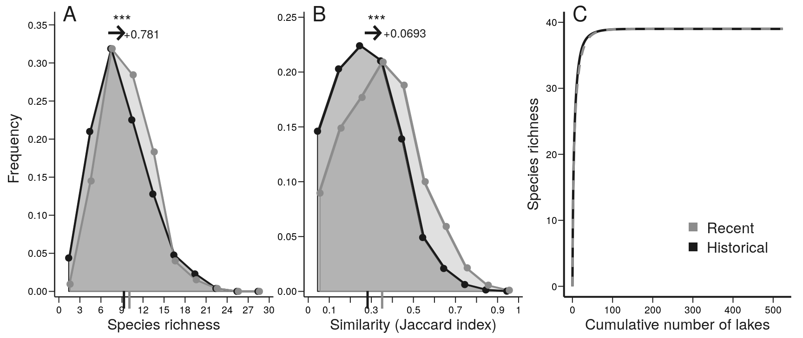

vignettes/homogenOntario.Rmd
homogenOntario.RmdThis is a small web page that guides the reader through the code we used to carry out the analysis in Cazelles (2019) DOI: 10.1111/gcb.14829. Note that pipeline() is a function that runs the entire analysis. We are not allowed to share the exact lake locations, therefore the context map and 3 supplementary figures cannot be reproduced.
The file sf_bsm_ahi includes presence and absence in both survey for all species as well as the lake descriptors and climate data.
head(sf_bsm_ahi[, 1:10])
#> Simple feature collection with 6 features and 10 fields
#> geometry type: POINT
#> dimension: XY
#> bbox: xmin: 0 ymin: 0 xmax: 0 ymax: 0
#> epsg (SRID): 4326
#> proj4string: +proj=longlat +datum=WGS84 +no_defs
#> idLake Waterbody_Name Waterbody_Location_ID Area_km2_ Maximum_Depth_m_
#> 1 Lake_001 0 0 4.307736 33.6
#> 2 Lake_002 0 0 1.395822 22.9
#> 3 Lake_003 0 0 1.597330 18.0
#> 4 Lake_004 0 0 26.424009 91.5
#> 5 Lake_005 0 0 1.216975 12.0
#> 6 Lake_006 0 0 15.584772 30.0
#> Mean_Depth_m_ Shoreline_km_ Perimeter_km_ Elevation_m_ Degree_Days_°C_
#> 1 11.7 23.570054 23.570054 430 1451
#> 2 8.8 7.488648 7.488648 346 1623
#> 3 3.2 19.123600 15.757892 293 1785
#> 4 17.4 179.040544 94.058567 86 2214
#> 5 3.7 8.459106 7.194630 444 1429
#> 6 5.3 120.490817 47.986231 466 1429
#> geometry
#> 1 POINT (0 0)
#> 2 POINT (0 0)
#> 3 POINT (0 0)
#> 4 POINT (0 0)
#> 5 POINT (0 0)
#> 6 POINT (0 0)We used an0_retrieve_species_info() to retrieved taxonomic hierarchy. It basically wraps around taxize functions. As an example, to retrieve taxonomic hierarchy for white sucker (Catostomus commersonii) and lake trout (Salvelinus namaycush), we ran:
sps <- c("Catostomus commersonii", "Salvelinus namaycush")
taxo <- an0_retrieve_species_info(sps)
#> ══ 1 queries ═══════════════
#> ✔ Found: Catostomus commersonii
#> ══ Results ═════════════════
#>
#> ● Total: 1
#> ● Found: 1
#> ● Not Found: 0
#> ══ 1 queries ═══════════════
#> ✔ Found: Salvelinus namaycush
#> ══ Results ═════════════════
#>
#> ● Total: 1
#> ● Found: 1
#> ● Not Found: 0
taxo
#> sciNameTsn hybrid tsn subphylum superclass class
#> 1 Catostomus commersonii FALSE 553273 Vertebrata Actinopterygii Teleostei
#> 2 Salvelinus namaycush FALSE 162002 Vertebrata Actinopterygii Teleostei
#> superorder order superfamily family genus
#> 1 Ostariophysi Cypriniformes Cobitoidea Catostomidae Catostomus
#> 2 Protacanthopterygii Salmoniformes <NA> Salmonidae Salvelinus
#> species subspecies
#> 1 Catostomus commersonii NA
#> 2 Salvelinus namaycush NAWe retrieved data from the literature and from Fishbase using the species() function of rfishbase (after validating species names with validate_names()). For the two species we used above as an example, we would run:
fie <- c("LongevityWild", "UsedforAquaculture", "UsedasBait", "GameFish",
"Importance")
species(sps, field = fie)
#> # A tibble: 2 x 5
#> LongevityWild UsedforAquaculture UsedasBait GameFish Importance
#> <dbl> <chr> <chr> <dbl> <chr>
#> 1 12 commercial occasionally -1 minor commercial
#> 2 50 commercial never/rarely -1 commercialdf_species_info
We actually ran the code described above for the entire set of species and stored the data thereby obtained in df_species_info.
names(df_species_info)
#> [1] "idOnt" "sci_hasnain"
#> [3] "rfbName" "Listed"
#> [5] "spLabel" "commonName"
#> [7] "scientificName" "taxoLevel"
#> [9] "tsnName" "tsn"
#> [11] "class" "order"
#> [13] "family" "genus"
#> [15] "species" "subspecies"
#> [17] "LongevityWild" "UsedforAquaculture"
#> [19] "UsedasBait" "GameFish"
#> [21] "SpecCode" "Importance"
#> [23] "baitOntario" "OGT"
#> [25] "FTP" "ULIT"
#> [27] "CTMax" "OS"
#> [29] "OE" "log10BS_bsm"
#> [31] "thermalGuild_syn" "Updated_Trophic_Level"
#> [33] "thermalGuild_bsm" "meanDepth_bsm"
#> [35] "stocked"
head(df_species_info[, 1:5])
#> idOnt sci_hasnain rfbName Listed spLabel
#> 1 13 Ichthyomyzon unicuspis Ichthyomyzon unicuspis 1 SiLam
#> 2 31 Acipenser fulvescens Acipenser fulvescens 0 LaStu
#> 3 41 Lepisosteus osseus Lepisosteus osseus 0 LnGar
#> 4 51 Amia calva Amia calva 0 Bowfi
#> 5 61 Alosa pseudoharengus Alosa pseudoharengus 0 Alewi
#> 6 63 Dorosoma cepedianum Dorosoma cepedianum 0 GiShaGains and losses are computed with an1_gain_loss():
galo <- an1_gain_loss(sf_bsm_ahi)
names(galo)
#> [1] "sf_bsm_ahi" "gain_loss" "beta_AHI" "beta_BSM" "nm_ahi"
#> [6] "nm_bsm"
head(galo$sf_bsm_ahi[, 1:3])
#> idLake Waterbody_Name Waterbody_Location_ID
#> 1 Lake_001 0 0
#> 2 Lake_002 0 0
#> 3 Lake_003 0 0
#> 4 Lake_004 0 0
#> 5 Lake_005 0 0
#> 6 Lake_006 0 0Occurrence data for every species are obtained by running an2_occurrence_species():
spoc <- an2_occurrence_species(galo)
names(spoc)
#> [1] "idOnt" "occAHI"
#> [3] "occBSM" "lost"
#> [5] "gain" "both"
#> [7] "order" "family"
#> [9] "species" "commonName"
#> [11] "GameFish" "baitOntario"
#> [13] "FTP" "ULIT"
#> [15] "log10BS_bsm" "thermalGuild_bsm"
#> [17] "meanDepth_bsm" "Updated_Trophic_Level"
#> [19] "LongevityWild" "stocked"
#> [21] "id_graph"
head(spoc[, 1:6])
#> idOnt occAHI occBSM lost gain both
#> 34 332 16 27 4 15 12
#> 15 199 17 38 14 35 3
#> 30 314 20 48 6 34 14
#> 5 121 25 52 6 33 19
#> 39 382 26 38 24 36 2
#> 21 211 44 12 41 9 3Regression are performed via an3_regressions(); below we show the summary for the best model obtained for the regression \(\Delta\)FTD as response variables and climate data as explanatory variables:
mods <- an3_regressions(galo, spoc)
summary(mods[[2]][[2]])
#>
#> Call:
#> lm(formula = cti ~ Elevation_m_ + Watershed_Area_km2_ + Watershed_Mean_Slope +
#> precipitation_july_AHI, data = df_reg2, na.action = "na.fail")
#>
#> Residuals:
#> Min 1Q Median 3Q Max
#> -6.5676 -0.7896 -0.0539 0.9080 7.2305
#>
#> Coefficients:
#> Estimate Std. Error t value Pr(>|t|)
#> (Intercept) 0.21658 0.06629 3.267 0.001159 **
#> Elevation_m_ 0.25833 0.08505 3.037 0.002506 **
#> Watershed_Area_km2_ -0.09840 0.06732 -1.462 0.144422
#> Watershed_Mean_Slope 0.18172 0.07037 2.582 0.010087 *
#> precipitation_july_AHI -0.31477 0.08574 -3.671 0.000266 ***
#> ---
#> Signif. codes: 0 '***' 0.001 '**' 0.01 '*' 0.05 '.' 0.1 ' ' 1
#>
#> Residual standard error: 1.515 on 517 degrees of freedom
#> Multiple R-squared: 0.06419, Adjusted R-squared: 0.05695
#> F-statistic: 8.865 on 4 and 517 DF, p-value: 6.279e-07Contributions of individual species to beta diversity metrics are computed with an4_contributions_beta():
cobe <- an4_contributions_beta(galo, spoc)
names(cobe)
#> [1] "contrib" "fsh_ahi" "fsh_bsm" "nofsh_ahi" "nofsh_bsm"
head(cobe$contrib[, 1:8])
#> idOnt occAHI occBSM lost gain both order family
#> 1 80 70 49 24 3 46 Salmoniformes Salmonidae
#> 2 81 239 245 14 20 225 Salmoniformes Salmonidae
#> 3 91 287 302 29 44 258 Salmoniformes Salmonidae
#> 4 93 266 329 24 87 242 Salmoniformes Salmonidae
#> 5 121 25 52 6 33 19 Osmeriformes Osmeridae
#> 6 131 360 393 7 40 353 Esociformes EsocidaeEvery figure of the study (except the context map) are including in this package as a function (fig[1-6]_*() for figures in the main text and figS[1-8]_*() for figures in the Supplementary Information). For a given figure, the corresponding function draws the figure and exported as a png files with a resolution of 900 dpi in the folder output (created if it does not exist).
For instance to obtain figure 2, one need to run:

which writes the figure above in output/fig2_homogenization.png. Similarly, fig3_regressions(galo, mods) creates output/fig2_homogenization.png (and so forth).
Note that as we are not allowed to share lake location Figure S3 S4 and S6 are not reproducible.